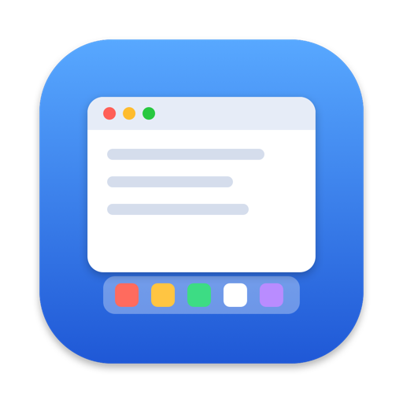

DockSnugYour Dock moved. Your windows didn't.
On a Mac with more than one monitor, the Dock jumps to whichever screen you push the pointer against. Your windows stay the size they were, so they end up hidden under the Dock or stopping short with an empty strip below.
DockSnug lets the Dock go where you want it and fits your windows around it.
Get it on GitHubFree and open source, for macOS 13 or later. There is no ready-made download yet: you build it yourself with Xcode, which takes a few minutes.
Windows grow when the Dock leaves and make room when it arrives.
What it fixes
- The empty bar at the bottom of the screenMaximised windows fill the screen again as soon as the Dock leaves.
- Windows hidden under the DockWhen the Dock arrives, the windows on that screen make room for it.
- The gap that won't go awaySometimes macOS keeps space reserved for a Dock that has already left, often around full-screen apps, and no window can grow into it. DockSnug clears that for you.
- A Dock that won't comeIf macOS ignores you pushing against a screen's edge, DockSnug brings the Dock over.
Good to know
To clear that stuck space, DockSnug restarts the Dock, so you may see it flicker for a second and your pointer jump briefly as the Dock is put back where it was. It needs Accessibility permission to resize your windows.
Windows in native full screen are left alone, and it runs quietly in the background, with no menu bar icon.